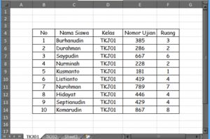
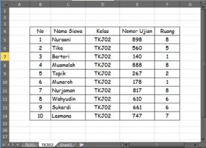
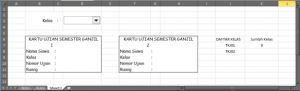
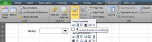
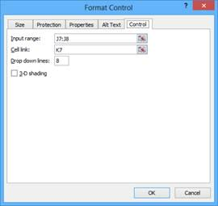
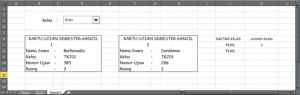

Kartu ujian otomatis
Satu lembar data siswa diubah menjadi kartu ujian yang berubah otomatis saat nomor peserta dipilih, memakai VLOOKUP.
Coba langsung di browserLembar kerja mini, kuis, dan tanda selesai.
Buka versi interaktifLangkah praktik
- Siapkan sheet data berisi nomor peserta, nama, kelas, ruang.
- Di sheet kartu, sediakan sel nomor peserta (bisa dengan Data Validation List).
- Isi nama dengan =VLOOKUP(nomor; Data!A:D; 2; FALSE), dan seterusnya untuk kolom lain.
- Atur area cetak agar satu kartu per halaman atau beberapa kartu per halaman.
Tangkapan layar praktik
6 gambar langkah demi langkah. Klik gambar untuk membuka ukuran penuh.





